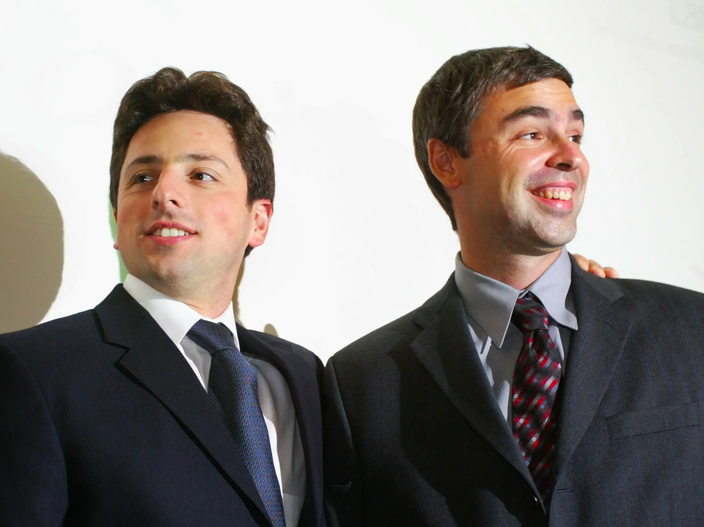

Sergey Brin (21/8/1973) & Larry Page (26/03/1973)

Sergey Brin
Sergey ou Sergueï Brin , né 26/03/1973 le à Moscou, est un entrepreneur
américain d'origine russe, cofondateur avec Larry Page de la société Google.
Membre de son conseil d'administration, il avait en 2011 le titre
de président et de directeur technique.
Larry Page
Larry Page (né le 26 mars 1973) est un homme d'affaires, informaticien
et entrepreneur Internet américain surtout connu pour avoir co-fondé Google
avec Sergey Brin. Page a été PDG de Google de 1997 à août 2001, date à laquelle
il a démissionné en faveur d' Eric Schmidt , puis de nouveau d'avril 2011 à juillet
2015, lorsqu'il est devenu PDG de sa nouvelle société mère, Alphabet Inc. ,
créée pour fournir des « services majeurs ».
La création de Sergey Brin & Larry Page: Google
Google LLC est une société technologique multinationale américaine qui se concentre
sur l'intelligence artificielle, la publicité en ligne,des moteurs de recherche,
le cloud computing,les logiciels informatiques,l'informatique quantique,le commerce électronique
et l'électronique grand public. Elle a été qualifiée de « l'entreprise la plus puissante du monde »
et comme l'une des marques les plus précieuses en raison de sa domination du marché, de sa collecte
de données et de ses avantages technologiques dans le domaine de l'intelligence artificielle.
Google a été fondé le 4 septembre 1998 par les informaticiens américains Larry Page et Sergey Brin
alors qu'ils étaient doctorants à l'Université de Stanford en Californie.
L'entreprise s'est rapidement développée pour proposer une multitude de produits et services au-delà
de la recherche Google. Ces produits répondent à un large éventail de cas d'utilisation, notamment la
messagerie électronique ( Gmail ), la navigation ( Waze & Maps ), le cloud computing ( Cloud ),
la navigation Web ( Chrome ), le partage de vidéos ( YouTube ), la productivité ( Workspace ),
les systèmes d'exploitation ( Android ), stockage cloud ( Drive ), traduction linguistique ( Traduire ),
stockage de photos ( Photos ), et bien plus encore...
Formulaires HTML
Maintenant un petit QCM !